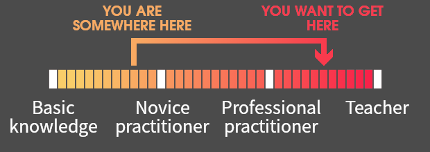
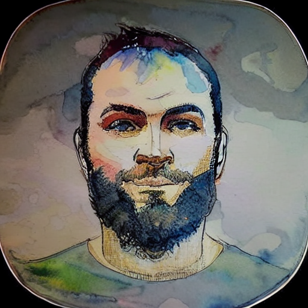

Fear. No. Statistic.
Since 2019, we have been helping practitioners navigate the
perilous waters of statistics and Machine Learning.
Are you an astronomer seeking to advance your research by delving
deeper into statistics beyond the basics?
Do you possess some familiarity with Machine Learning (and possibly
employ certain algorithms) but are looking to demystify the
intricacies of this "black box"?
The AstroStat School suits the needs of those who
intend to "bridge the gap", and elevate their level from novice to
mid-advanced:

The school's approach is to guide students and early postdocs in the use of the most common tools for the astronomer's daily analysis tasks. Each topic includes an introductory part along with hands-on analysis of astronomical data, and poses particular emphasis on the development of coding abilities which will serve as a quick reference for everyday work.Due to its very nature as a hands-on workshop, this event will require on site attendance – we do not provide an option for remote participation. The host will provide the computational facilities required by the classes: the attendees do not need to use their personal computers. The school is heavily based on the Python programming language. Therefore, it is expected that applicants possess the basic knowledge necessary to read and understand the code.
Where
CUNY Graduate Center, New York
When
2026 June 1, 3, 4 and 5
Registration
To register please fill in this
form.
There are no registration fees. Registration is open to all levels - undergrad, MSc and PhD students, postdocs, and faculty. There will be a selection only if we reach more than 35 applicants and priority will be given to students.
Registration closes: 15 May 2026
Topics
Classical & Bayesian Statistics
Deep Learning
Markov Chain Monte Carlo
Simulation Based Inference
Machine Learning Practices
GPU Parallelization
School Schedule
You can find the schedule here.
Information on the specific times for the lectures, coffee breaks, and lunch, will follow in due time.
Instructors
Teaching Body

Dr. Grigoris Maravelias
PeriAstron
Andreas Tersenov
FORTH & CEA Paris-Saclay

Dr. Giorgos Vernardos
Lehman College, City University of NY & AMNH
Teaching Assistants
To be announced.
Material
As per AstroStat Academy's open access policy, all lectures will be made freely and publicly available on our GitHub, for everyone.
Legacy
What began as a grassroots initiative to bridge the gap between astronomy and modern statistical methods has grown into a sought-after international program.
The AstroStat School was founded in 2019 by J. Andrews, P. Bonfini, K. Kovlakas, and G. Maravelias at the University of Crete.
Later, the AstroStat Academy was founded to manage the School and other teaching initiatives.
Over the previous editions, the School has trained researchers from countries and institutes all over the world, building a growing community of data-literate astrophysicists. The 2026 NY edition marks the School's first move to US, opening a new chapter under the CUNY ecosystem.
Other events
Want to acknowldege us?
We wish to thank the AstroStat Academy for providing training on the analysis methods adopted in this work.... and become a member of the AstroStat Academy's paper community!
Participants
So far, we have hosted ~180 students from 110 different institutes and 60 countries!
Partners

Organizing Committee
| Person | Institute | Contact |
|---|---|---|
| Giorgos Vernardos, Dr. | Lehman College, AMNH, CUNY Graduate Center | georgios.vernardos (at) lehman.cuny.edu |
| Paolo Bonfini, Dr. | TBD | TBD |
| Konstantinos Kovlakas, Dr. | TBD | kovlakas (at) ice.csic.es |
| Grigoris Maravelias, Dr. | TBD | TBD |
| Andreas Tersenov | FORTH (IA & ICS), CEA Paris-Saclay | atersenov (at) physics.uoc.gr |
Contact Us
For any info regarding the school